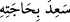
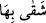
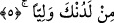

Rivayet edildiğine göre muhtaç bir kimse bir adama şöyle dedi: “Ben şu zamanda
iyilik yaptığın kişiyim.” Adam da ona: “Bizi bize vesile yapana selam olsun” dedi ve
onun ihtiyacını giderdi, isteğini yerine getirdi. Bunun izahı şöyledir: Kabûl ettikten
sonra reddetmek, önceki iyiliği boşa çıkarır. İhsanda bulunan kimse ise böyle bir şeyi
istemez. Sanki iyilik yapan kimse şöyle demiştir: “Sen, kalbim ve bedenim güçlü, senin
lütfuna alışmamış iken beni geri çevirmedin. Eğer şimdi beni kabule alıştırdıktan sonra
ve son derece zayıf olduğum şu halde geri çevirirsen, kalbimin ızdırabı kat kat artar ve
onu mahvedersin.” Kişi ihtiyacını elde edince, “__WORD__ (istediğini elde etti)”, elde
edemediği zaman ise: “__WORD__ (onu elde edemedi)” denilir. İmam (Râzî)’nin tefsîrinde
böyle geçmektedir.
5. Doğrusu ben, arkamdan iş başına geçecek olan yakınlarımdan endişe ediyorum.
Karım da kısırdır. Tarafından bana bir veli (oğul) ver.
Sonra Zekeriyya (a.s.) istediği şeyin dinde kendisinden faydalanılan evlâd olduğunu
açıklayarak şöyle dedi:
“Doğrusu ben, arkamdan iş başına geçecek yakınlarımdan endişe ediyorum.” Yani
ben öldükten sonra, benim yerime geçecek birisi lazım. Çünkü ben akrabalarımın
haksızlık yapmasından korkuyorum, demektir. Gücün zayıflaması ve yaşın büyümesi,
ölümünden sonra onun işini üzerine alacak kimselerden korkmasının dayanaklarını
oluşturmaktadır.
Zekeriyya
(a.s.)’ın
yakınları
amcasının
oğullarıdır.
Onlar
İsrâiloğulları’nın en şerlileri idiler. Hz. Zekeriyya, onların ümmetine iyi halifelik
yapmayacaklarından ve insanların dinlerini değiştireceklerinden korkmuştu.
el-Kâmûs’ta der ki: “el-Mevlâ” mâlik, köle, âzâd eden, âzâd edilen, sâhip, amca oğlu
gibi yakınlar, komşu, müttefik, oğul, amca, misafir, ortak, kız kardeşin oğlu, velî,
terbiyeci, yardımcı, nimet veren, nimet verilen, seven, tâbi olan ve evlilikten doğan
hısımlık gibi anlamlara gelir.”
“Karım da kısır” Karısı, Fîl’in oğlu Fâkûz’un kızı Îşâ idi. O, Fâkûz’un kızı
Hanne’nin kız kardeşidir. Taberî’nin belirttiğine göre Hanne Hz. Meryem’in annesi idi.
Kuteybî’ye göre Hz. Zekeriyya’nın hanımı, İmran’ın kızı Îşâ idi. Bu görüşe göre Hz.
Yahya, Hz. İsa’nın gerçekten teyzesinin oğludur. Diğer görüşe göre ise, annesinin
teyzesinin oğlu olur. İsrâ hadîsinde Hz. Peygamber (a.s.): “Ben iki teyze oğlu olan İsa
ve Yahya ile görüştüm.”[4] buyurmuştur. Bu birinci görüşün delilidir. İmam Süheylî de
et-Ta‘rif ve’l-i’lâm’da bunun böyle olduğunu söylemiştir.
Âyette geçen “__WORD__ (kısır)” kelimesinden maksad, gençliğinden îtibaren doğurmamış